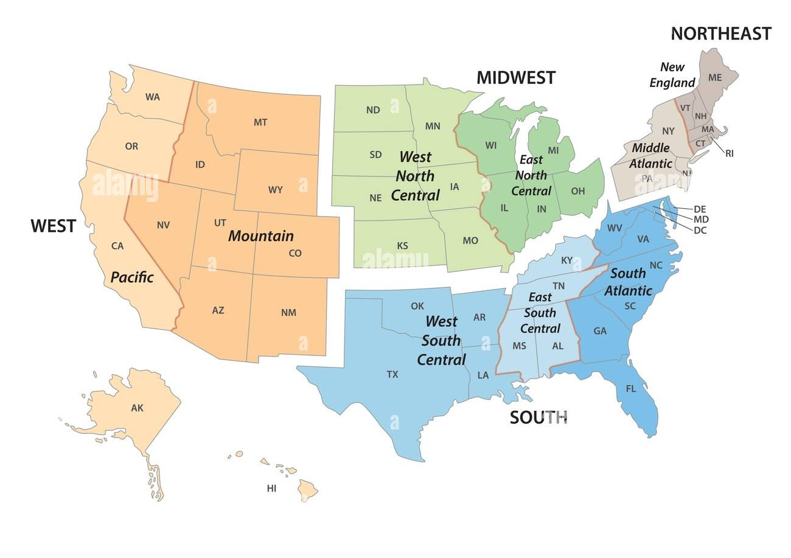

Acquiring and Exploration of Census Data
Last updated on 2026-07-01 | Edit this page
Estimated time: 240 minutes
Overview
Questions
- What kinds of datasets are available from the U.S. Census Bureau?
- How can you visualize and analyze these datasets for your region of interest?
- How do you combine spatial and tabular Census data?
- What variables are available in the ACS dataset?
Objectives
- Provide an overview of the data available from the U.S. Census Bureau
- Explain how to download and visualize spatial data from the Census Bureau
- Demonstrate how to query and analyze the spatial data
- Demonstrate how to perform complex spatial joins
Introduction to Census Data
The U.S. Census Bureau provides three broad categories of datasets:
- Census TIGER/Line Shapefiles
- Decennial Census of Population and Housing
- American Community Survey (ACS)
Census TIGER/Line Shapefiles
TIGER (Topologically Integrated Geographic Encoding and Referencing) is the Census Bureau’s primary geospatial data product. TIGER/Line shapefiles are available from 2007 to the present; earlier data is available in ASCII format.
These shapefiles include all legal boundaries and names for geographic units across the United States — states, counties, places, ZIP codes, urban areas, census blocks, block groups, and census tracts.
Each record includes a standard GEOID that links
directly to Census demographic data.

TIGER/Line Shapefiles use American National Standards Institute
(ANSI) codes to identify geographic entities, including both FIPS
(Federal Information Processing Series) and GNIS (U.S. Geological Survey
Geographic Names Information System) codes. For example, the field
STATEFP contains the state FIPS code, and
STATENS contains the state GNIS code. County-level FIPS
codes are five digits: the first two identify the state, and the last
three identify the county.
Decennial Census of Population and Housing
Conducted every ten years, the Decennial Census counts every person living in the U.S. at a single point in time, providing the most complete population data with the smallest margin of error.
American Community Survey (ACS)
The ACS is an annual survey that collects information from a sample of the population. It covers many topics not included in the Decennial Census, such as education, employment, internet access, and transportation. Because it is sample-based, ACS estimates carry a higher margin of error than Decennial Census counts.
The ACS is published in two forms:
- 1-year estimates — based on 12 months of data; available for areas with populations of 65,000+
- 5-year estimates — based on 60 months of data; available for all geographies, including small areas
Variables include (in addition to standard demographic and housing data):
Social characteristics:
- School enrollment and educational attainment
- Marital status and fertility
- Grandparents as caregivers
- Veteran and disability status
- Language spoken at home
Economic characteristics:
- SNAP/Food Stamps participation
- Health insurance coverage
- Income and benefits
- Employment location and commute mode
Other:
- Ancestry, citizenship status, place of birth, and year of entry
- Census data supports planning services for specific population groups
- It can be used for business and facility site selection
- It supports public policy analysis
- It enables spatial analysis of hazard impacts, epidemiological models, and more
Accessing the Census Data
Before mapping or analyzing Census data, you need to obtain it. The Census Bureau provides several access methods:
- Manual downloads from data.census.gov.
- Bulk file downloads
- Programmatic access via the Census API
This lesson focuses on API-based access, which lets you retrieve demographic and socioeconomic data directly into Python workflows — without clicking through a web interface.
What Is a Census API Call?
An API (Application Programming Interface) lets computers request data directly from a server using a structured URL. Census APIs return machine-readable data (JSON or CSV) that can be processed automatically in Python or other tools.
Using the Census API, you can:
- Specify exactly which variables you want
- Choose the geographic scale (state, county, tract, block group)
- Automate downloads for reproducibility
- Integrate data directly into scripts and analyses
This approach is especially useful for research, teaching, and large-scale analysis.
Typical Census API Workflow
- Construct a request URL specifying variables and geography
- Send the request to the Census API endpoint
- Receive structured data (JSON or CSV)
- Convert results into a DataFrame
- Optionally join data with geographic boundary files for spatial analysis
Note on Privacy
Census APIs return aggregate data only. Individual-level records are never provided, ensuring respondent privacy.
Getting Started with the Census Notebook
Work through the interactive Python notebook linked below, which covers everything on this page hands-on inside Google Colab. More Reading on Census API below!
This part of the session covers:
Part 1: Retrieving the Dataset - You can refer to the theory just below.
Part 2: Exploring the Dataset - Structures, variables, columns, geographical units.
Tutorial: Accessing ACS Data via the Census API
Step 1 — Explore the Census API
- Go to the Census Developers Page.
- Click Available APIs (left of the search bar).
- Scroll down and select American Community Survey (ACS).
- The ACS offers 1-year and 5-year estimates. We will use the 2023 ACS 5-Year, which covers data from 2019–2023.
- Scroll to Data Profiles and review the “Example Call” links — these are the base API URLs you’ll use in Python or a browser.
- Under Data Profiles, click the
htmllink next to 2023 ACS Comparison Profiles Variables to browse all available variable codes.
Step 2 — Understand API Links for Geographic Levels
The ACS API uses different URL patterns depending on the geographic level you want:
- Country
- State
- Tract (within a state and county) For tract-level data, use the
state > county > tractpattern. Here is an example for Indiana (state code18):
https://api.census.gov/data/2023/acs/acs5/profile?get=NAME&for=tract:*&in=state:18&in=county:*&key=YOUR_KEY_GOES_HERE-
tract:*returns all tracts in the specified state -
county:*returns all counties in the specified state - Replace
state:18with your state’s FIPS code (State Codes List) -
state:*is not allowed for tract-level queries due to dataset size limits — you must specify a state
Step 3 — Add Variables to Your Request
On the variables page from Step 1, press Ctrl+F and search for your variable of interest.
Example: searching “no vehicles available” returns variableDP04_0058E(the estimate version).-
Add the variable after
NAME, separated by a comma: Before:https://api.census.gov/data/2023/acs/acs5/profile?get=NAME&for=tract:*&in=state:18&in=county:*After:
https://api.census.gov/data/2023/acs/acs5/profile?get=NAME,DP04_0058E&for=tract:*&in=state:18&in=county:* -
Add additional variables by separating them with commas:
get=NAME,DP04_0058E,DP02_0001E,DP03_0062E Make sure to add the
GEO_IDcolumn as well.
Step 4 — Optional Enhancements
-
View variable descriptions: Add
&descriptive=trueto your URL -
Download as CSV: Add
&outputFormat=csvfor a spreadsheet -friendly file
Heads up: API variable names are case-sensitive — they must match exactly as listed in the variables page.
📺 Video Tutorial: How to Access ACS Data from the Census API
Example: Final API Call
Note: Make sure to add the API key within the link.
https://api.census.gov/data/2023/acs/acs5/profile?get=NAME,GEO_ID,DP04_0058E&for=tract:*&in=state:18&in=county:*&descriptive=true&outputFormat=csv&key=""This returns the number of occupied households without a vehicle for every census tract in Indiana.
- The Census API gives you flexible, precise access to ACS data
- You can combine multiple variables in a single API call
-
&descriptive=trueadds plain-language descriptions for each variable -
&outputFormat=csvmakes the data easy to open in Excel or import into Python